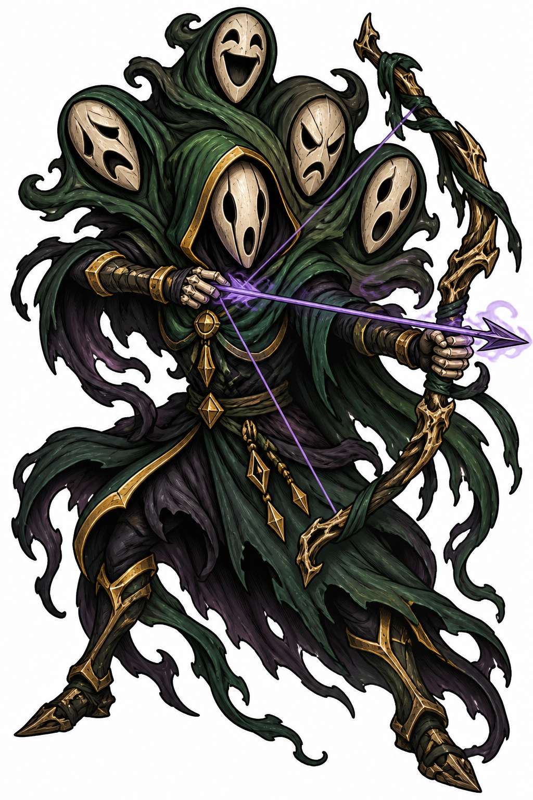
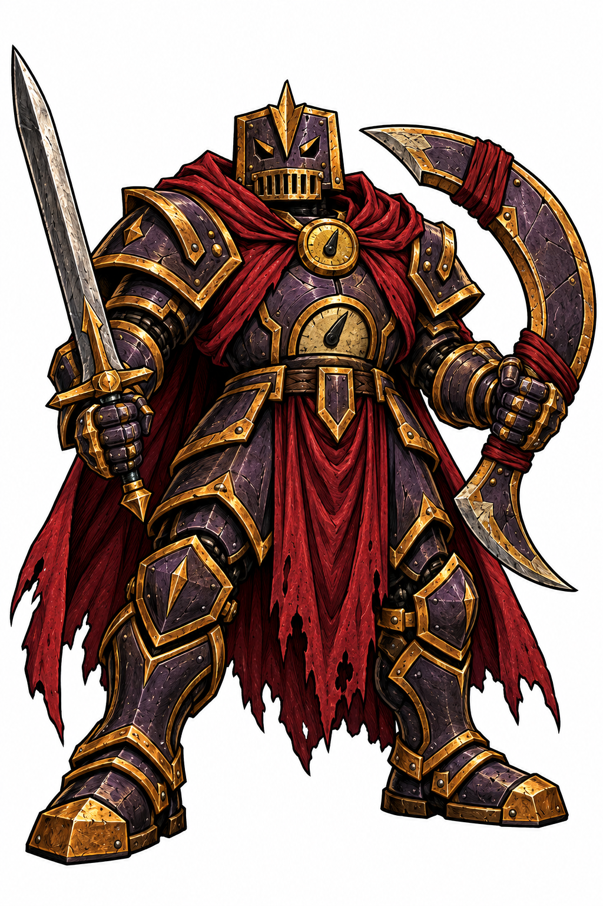
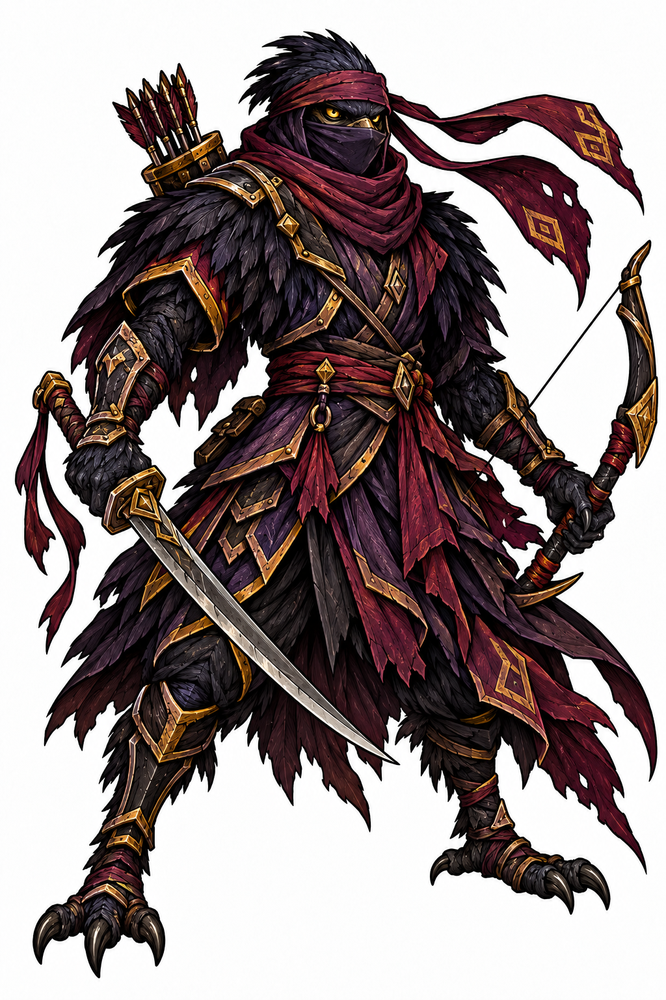
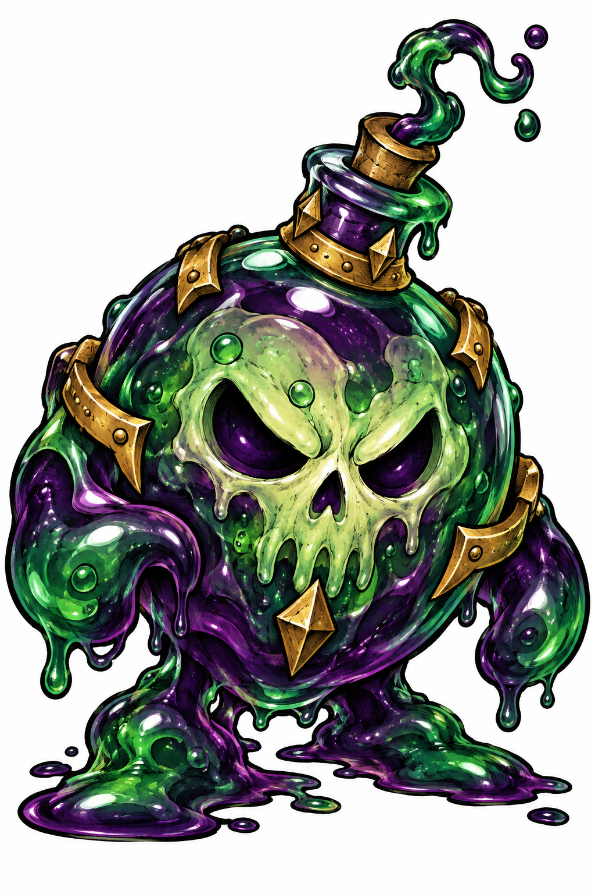
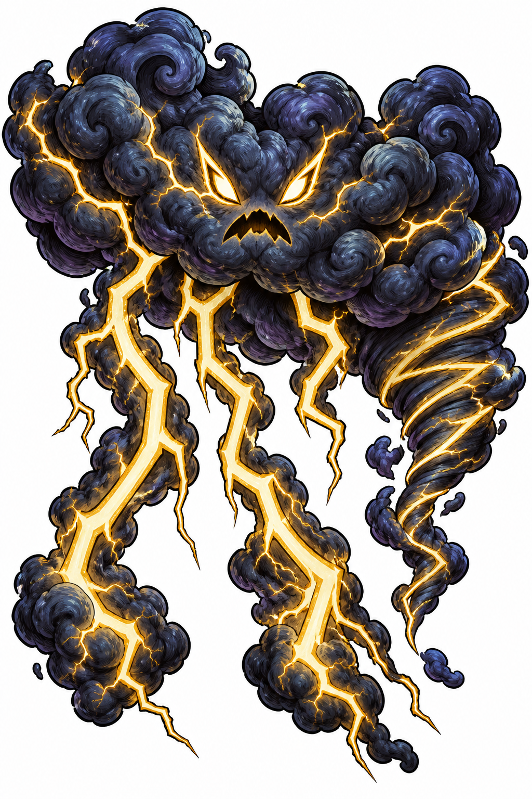
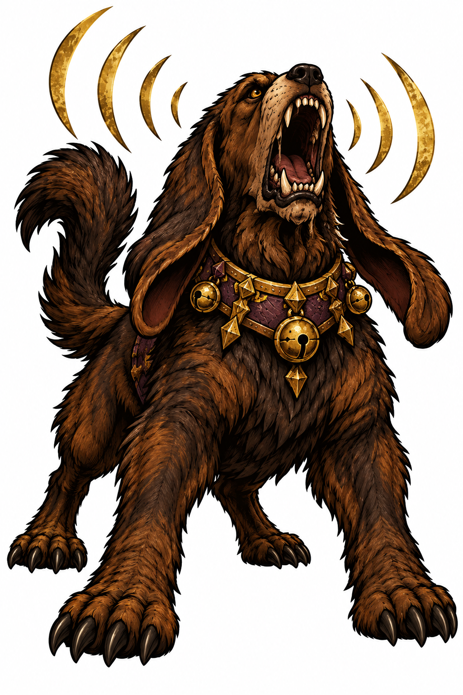
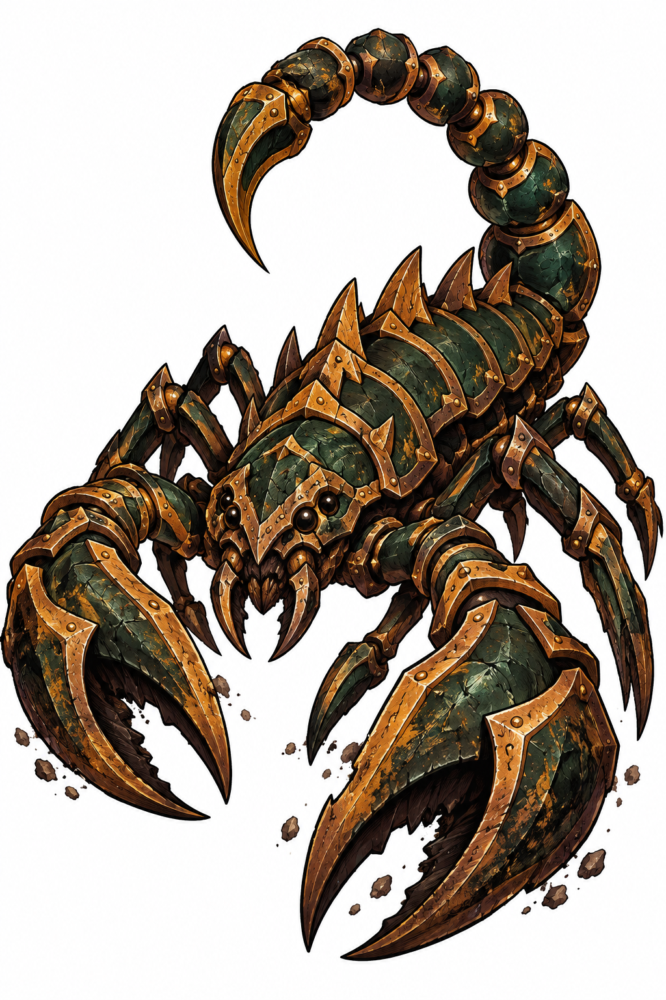
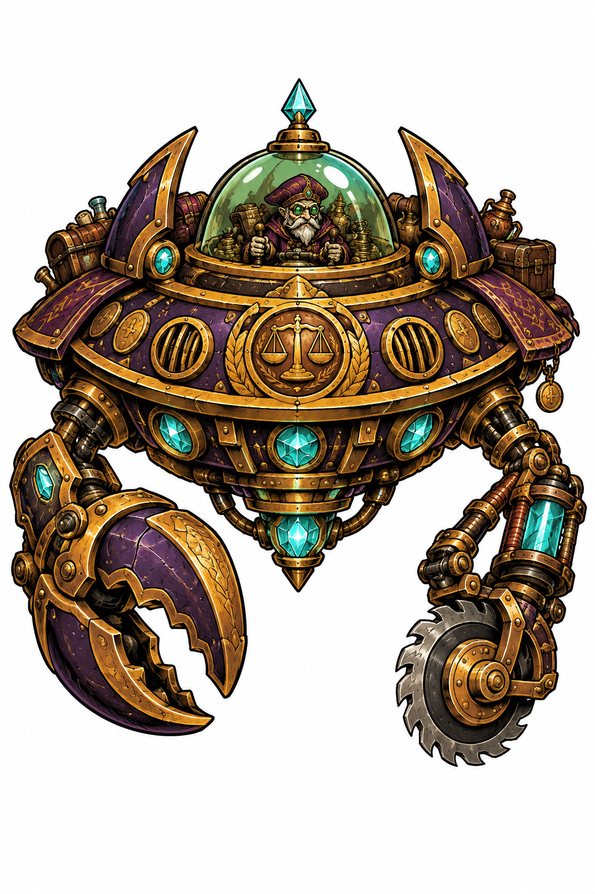

HunterOne pine-cloaked archer creature slowly folds between five emotional mask forms.
WarriorA massive plum-and-gold clockwork armored knight, seen from directly above, bearing a straight sword and crescent returning blade with a breathing crimson cape.
ThiefA raven ninja seen from directly above, wearing a feather mantle, gold-trimmed cloth, long trailing ribbons and a quiver while carrying a sword and bow.
AlchemistOne alchemical gel creature morphs between bomb, skull, and potion silhouettes.
CardinalA living storm cloud rolls its lobes around contained lightning and a coiled funnel.
BardA frightening mastiff with pendulous ears and a plum-and-gold resonator collar.
ForagerA mineral-green and brass armored scorpion viewed directly from above, with eight legs, huge gold-edged pincers and a curling articulated tail.
MerchantAn extravagant purple-and-gold circular gadget ship with a mint glass canopy, tiny merchant pilot, brass pincer and slowly turning saw.